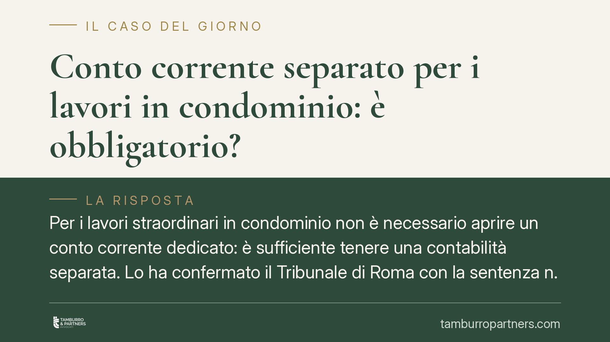

Conto corrente separato per i lavori in condominio: è obbligatorio?
Per i lavori straordinari in condominio non è necessario aprire un conto corrente dedicato: è sufficiente tenere una contabilità separata. Lo ha confermato il Tribunale di Roma con la sentenza n. 1309/2026, in linea con la disciplina dell'art. 1129 cod. civ. Chiariamo cosa cambia per amministratori e condòmini e come gestire correttamente i movimenti.

Il caso e perché conta
La domanda torna spesso nelle assemblee: quando il condominio approva lavori straordinari di rilievo, l'amministratore deve aprire un conto corrente ad hoc per quei lavori?
Il Tribunale di Roma, con la sentenza n. 1309/2026, ha dato una risposta netta: non esiste alcun obbligo di conto corrente separato per i lavori straordinari. Ciò che la legge richiede è la trasparenza contabile, non la moltiplicazione dei rapporti bancari.
La distinzione è tutt'altro che teorica. Da essa dipende la legittimità di molte delibere e la correttezza della gestione dell'amministratore.
Inquadramento normativo
Il riferimento è l'art. 1129 cod. civ., che impone all'amministratore di far transitare le somme ricevute a qualunque titolo dai condòmini o da terzi, nonché quelle erogate per conto del condominio, su uno specifico conto corrente, postale o bancario, intestato al condominio.
La norma, quindi, richiede un conto intestato al condominio e il transito di tutte le somme su di esso. Non richiede un conto distinto per ciascuna gestione o per ciascun cantiere. La ratio è consentire a ogni condòmino di verificare, in ogni momento, i movimenti relativi alla gestione tramite l'estratto conto.
A completare il quadro, l'art. 1130 bis cod. civ. disciplina il rendiconto condominiale, che deve contenere un registro di contabilità, un riepilogo finanziario e una nota sintetica esplicativa della gestione. È qui che si realizza la separazione contabile: le voci relative ai lavori straordinari vanno distinte e identificabili, ma restano all'interno del medesimo conto corrente condominiale.
Gli obblighi di trasparenza si riflettono anche sulla validità delle delibere. Ai sensi dell'art. 1137 cod. civ., la delibera contraria alla legge o al regolamento è impugnabile davanti all'autorità giudiziaria entro trenta giorni. Un rendiconto opaco o una gestione non tracciabile possono fondare l'impugnazione.
Implicazioni pratiche
Per l'amministratore il messaggio è duplice. Da un lato, non è esposto a responsabilità per il solo fatto di non aver aperto un conto dedicato ai lavori. Dall'altro, resta tenuto a garantire che le somme destinate ai lavori straordinari siano chiaramente distinguibili nella contabilità e riconducibili ai relativi movimenti bancari.
Per i condòmini, la pretesa di un conto separato non ha fondamento normativo e non può, di per sé, giustificare la contestazione del rendiconto o la revoca dell'amministratore. Ciò che può e deve essere preteso è la tracciabilità: ogni entrata e ogni uscita relativa ai lavori deve essere leggibile dai documenti contabili.
Per l'assemblea, resta ovviamente possibile deliberare volontariamente l'apertura di un conto dedicato, come scelta di maggiore trasparenza. È una facoltà, non un obbligo.
Attenzione a un punto spesso trascurato: la separazione contabile deve essere effettiva. Mescolare in modo indistinto le somme della gestione ordinaria con quelle dei lavori straordinari, senza una ricostruzione chiara, espone comunque l'amministratore a contestazioni sul rendiconto.
Cosa fare in concreto
- Verificate l'intestazione del conto: deve essere intestato al condominio, non all'amministratore. È un requisito di legge, a differenza del conto separato.
- Pretendete la distinzione contabile: controllate che nel registro di contabilità le voci dei lavori straordinari siano identificate e separate da quelle ordinarie.
- Chiedete gli estratti conto: ogni condòmino ha diritto di prendere visione e di estrarre copia dei rendiconti e della documentazione bancaria. Esercitate questo diritto in corso d'opera, non solo a lavori conclusi.
- Valutate la delibera volontaria: se il cantiere è di importo elevato, proponete in assemblea l'apertura di un conto dedicato come strumento di trasparenza condiviso.
- Agite nei termini: se il rendiconto o la delibera presentano profili di illegittimità, l'impugnazione va proposta entro trenta giorni ai sensi dell'art. 1137 cod. civ.
La regola di fondo è chiara: la legge tutela la trasparenza, non la forma. Un conto separato può essere utile, ma non sostituisce una contabilità ordinata; e una contabilità ordinata, da sola, soddisfa gli obblighi di legge.
---
*Contributo informativo a cura di Tamburro & Partners - Avv. Giuseppe Tamburro. Non costituisce parere legale.*
Ogni condominio ha una storia a sé.
Se gestisci un'amministrazione e vuoi un confronto su una specifica questione condominiale, scrivi allo studio. Ti rispondiamo entro un giorno lavorativo.